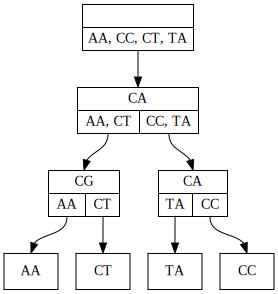
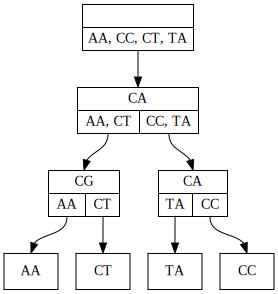

Quickstart
This minimal example showcases some features of the history DAG, and provides a conceptual introduction to the data structure.
The data structure
A history DAG is a way to represent a collection of trees whose nodes (including internal nodes) each carry label data, such as a nucleotide sequence.
In its simplest form, a history DAG may represent a single tree. To construct such a history DAG from a tree, we annotate each node in the tree with its child clades. The clade beneath a tree node is the set of leaf node labels reachable from that node, or the set containing the node’s own label if it is itself a leaf. The child clades of a node are the set of clades beneath that node’s children.
After annotating each node with its child clades, a UA (universal ancestor) node is added as a parent of the original tree’s root node. The resulting structure is an example of a history DAG which we call a clade tree:
 -> 
-> 
{kind=link}
Notice that edges in the history DAG are associated not just to a parent node, but to a specific child clade of their parent node. The child clade of the parent node associated to an edge, must be the same as the clade below the child node that the edge targets.
After converting multiple trees with the same set of leaf labels to clade trees, those clade trees can be unioned to create a history DAG that represents at least those trees used to create it. Any structure in the resulting history DAG which contains the UA node and all leaves, and has exactly one edge for each node-child clade pair, is a clade tree. Clade trees represent labeled trees by the inverse of the correspondence introduced above:
For example, the clade tree highlighted in red in this image:

represents this internally labeled tree:

A history DAG in general represents more trees than used to construct it, since it automatically represents trees resulting from swapping certain substructures between input trees. The following figure illustrates a simple example of this, with the two input trees on the left panel yielding a history DAG which represents the original two trees, as well as two new trees shown in the right panel.

Installing
Although the package is not on PyPI, installation is straightforward:
pip install https://github.com/matsengrp/historydag/archive/refs/heads/main.zip
Alternatively, clone the repository and install:
git clone https://github.com/matsengrp/historydag.git
pip install historydag/
Using the package
In this package, the history DAG is a recursive data structure consisting of
historydag.HistoryDagNode objects storing label, clade, and adjacency
data. Each history DAG is wrapped in a user-facing historydag.HistoryDag
object, which points to the UA node, and provides API-exposed methods.
The historydag repository provides some sample data in the form of pickled
ete3.Tree objects whose nodes have name and sequence
attributes, and which all have the same hamming parsimony score.
Working from a directory containing the cloned historydag repository,
we can load this data and create a history DAG:
>>> import historydag as hdag
>>> import pickle
>>> with open('historydag/sample_data/toy_trees.p', 'rb') as fh:
... ete_trees = pickle.load(fh)
>>> len(ete_trees)
100
Now, we will create a history DAG using the sequence attribute as the data
for node labels:
>>> dag = hdag.history_dag_from_etes(ete_trees, ['sequence'])
>>> dag.count_trees()
1041
>>> dag.count_topologies()
389
Notice that the history DAG we created has many more unique trees than we used to create it, as well as more unique topologies, ignoring internal node labels. However, all trees in the history DAG are guaranteed to have the same parsimony score, if the input trees were maximally parsimonious. In this example, all 1041 trees in the DAG have a parsimony score of 75:
>>> dag.hamming_parsimony_count()
Counter({75: 1041})
If the input trees were found by a parsimony program like dnapars, inferred ancestral sequences may contain nucleotide ambiguity codes. We can expand nodes according to these codes:
>>> dag.explode_nodes(expand_func=hdag.utils.sequence_resolutions)
0
However, in this case we see that doing so adds no new nodes (the return value
of explode_nodes).
We can find even more new trees by adding all edges which connect nodes whose child clades are compatible:
>>> dag.add_all_allowed_edges()
1048
>>> dag.count_trees()
3431531
After such edge additions, all the trees in the DAG are no longer guaranteed to have the same parsimony score, but we can trim the DAG to express only trees with the minimum parsimony score:
>>> dag.hamming_parsimony_count()
Counter({79: 688307, 78: 656079, 80: 586769, 77: 476362, 81: 400509, 76: 220205, 82: 218542, 83: 96485, 75: 45983, 84: 32848, 85: 8070, 86: 1324, 87: 48})
>>> dag.trim_optimal_weight()
>>> dag.hamming_parsimony_count()
Counter({75: 45983})
The history DAG may contain edges connecting nodes with the same label. We can collapse such edges, resulting in a DAG representing the trees we’d get by individually collapsing all the trees represented in the DAG.
>>> dag.convert_to_collapsed()
>>> dag.hamming_parsimony_count()
Counter({75: 1208})
>>> dag.count_topologies()
1054
The method historydag.HistoryDag.hamming_parsimony_count() calls a more
flexible method, historydag.HistoryDag.weight_count(), which takes three
functions as keyword arguments, which specify how weights are calculated up
each tree:
>>> dag.weight_count(** hdag.utils.hamming_distance_countfuncs)
Counter({75: 1208})
hdag.utils.hamming_distance_countfuncs is an instance of
historydag.utils.AddFuncDict, a dictionary subclass provided to
contain the functions necessary to count and trim by custom tree weights.
The class implements addition, combining weight count function arguments as new
functions which count weights jointly as tuples.
For example, we can jointly count parsimony score and the number of unique
nodes in each tree, at the same time:
>>> node_count_funcs = hdag.utils.AddFuncDict(
... {
... "start_func": lambda n: 0,
... "edge_weight_func": lambda n1, n2: n1.label != n2.label,
... "accum_func": sum,
... },
... names="NodeCount",
... )
>>> dag.weight_count(** (node_count_funcs + hdag.utils.hamming_distance_countfuncs))
Counter({(50, 75): 444, (51, 75): 328, (49, 75): 270, (52, 75): 94, (48, 75): 68, (53, 75): 4})
Now we can trim to only the trees with 48 unique node labels:
>>> dag.trim_optimal_weight(** node_count_funcs, optimal_func=min)
Finally, we can sample a single clade tree from the history DAG, and make it an ete tree for further rendering/processing:
>>> t = dag.sample().to_ete()
The historydag.HistoryDag.to_ete() method allows full control over
mapping of history DAG node attributes to ete3.Tree node attributes.